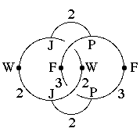
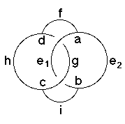

196
196 Orbifold Atlas Home Page
Orbifold Atlas Home Page
 Crystallographic Topology Home Page
Crystallographic Topology Home Page
Underlying Topological Space: S3; Figure Pseudo-Symmetry (FPS): 2
Euclidean 3-Orbifold with Invariant-Lattice-Complex Letters
(left), Wyckoff Site Letters (right)
 
| FPS | Mult | Lattice Comp | Group Graph | Wyckoff Set | 2[4]Cover |
| 1-2 | P | 332 | a, b | ||
| 3-2 | J | 222 | c, d | ||
| 4-2 | P4[F]P4 | 32<3>32 | (e1:a-b, e2:b-a)1 | ||
| 6-2 | P6[-]J2 | 33<2>22 | f:a-d, i:b-c | ||
| 6-2 | J2[W]J2 | 22<2>22 | (g:d-c)2, (h:d-c)3 | ||
| 12 | 1 | j:efghi | |||
| 12-2 | P12[-]J4 | 2*=332<1>222 | j1:a-c, j2:b-d | #207(i,j) | |
| 2 | 12-2 | F3[-]W2 | 2*=33<1>22 | j3:e1-h, j4:e2-g | #208(j,k) |
| 12-2 | m* | (j5:fgh)4, (j6:ghi)5 | #200(j,k) | ||
| 12-1 | m* | (j7:efi)6 | #215(i) | ||
| Struct-Mult | Critical Points | Heegaard Surf | Wyckoff Cut |
| Scub-1s | P/J/J/P | H33{22} | h e1 g e2 |
Lattice Points: (1) 0,0,0 + (1/4,1/4,1/4) x4&; (2) 1/2,0,0 + (0,1/4,0) x2; (3) 1/2,0,0 + (0,0,1/4) x2; (4) 0,y,z; (5) 1/2,y,z; (6) x,x,z
196
Orbifold Atlas Home Page
Crystallographic Topology Home Page
Page last revised: